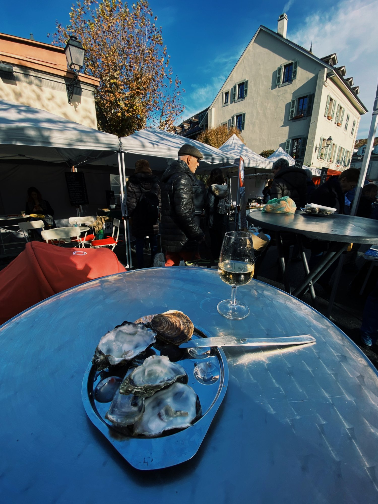
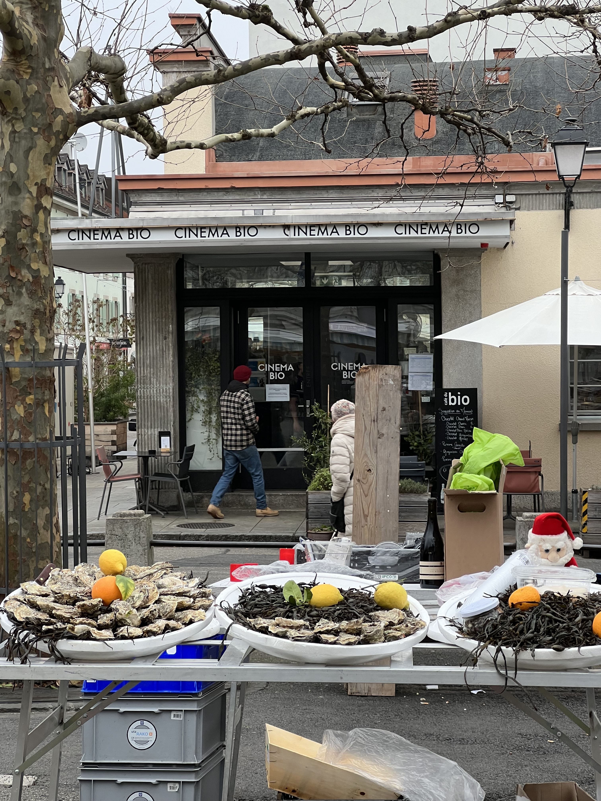

Carouge · Geneva · Switzerland
Samouraï des Mers — Bar à Huîtres
Fresh Breton oysters at the Saturday market. A glass of white. Keep moving.
There's a stall at the Carouge Saturday market where a frazzled Frenchman sets up a blue barrel table, lays out trays of oysters fresh from Brittany, and pours cold white wine. That's it. That's the tip.
He's not there every single Saturday — this is not a guarantee — but he's usually there, and when he is, it's one of the best ten minutes you can spend in Geneva. Get a half-dozen, get a muscadet, stand at the barrel, and eat them while the market moves around you. The stall is right in front of the Cinéma Bio, which has one of the best facades in the neighbourhood.
"One of the best ten minutes you can spend in Geneva."

You can take them away too — the stall does orders to go, by the dozen or by the kilo, if you want to bring a tray home and eat them properly. The phone number is on the sign. Call ahead if you're planning something.
This pairs perfectly with picking up a bottle from Paul-Henri Soler two stalls over. The man makes a white that was made for oysters, even if he doesn't know it yet.

Write a few lines. Add some photos. We turn it into a proper travel article. Next time someone asks you for a recommendation, you'll have a link.